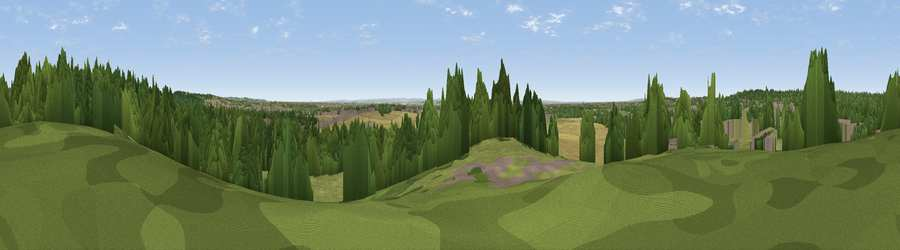

Hog Hill
#39900 in England · top 46% of its area beats it · near Chigwell RowThe view, rendered

A 360° render of this exact spot computed from the terrain model, tree cover and land cover — summer colours, afternoon light, calibrated against photographs of famous viewpoints. Real trees, hedges and buildings will differ in detail.
The panorama
Grey silhouette: terrain skyline in each direction (720 bearings, Earth curvature and refraction included). Dashed green: skyline with trees (+15 m) and buildings (+8 m) as obstacles. Blue strip: how far the ground is visible on each bearing.
Where the view opens
Wedge length = distance to the farthest visible ground on that bearing (vegetation-aware). Rings at 10, 25 and 50 km.
What fills the view
37% woodland · 36% grassland · 19% cropland · 7% built-up
Angular shares of the visible panorama (visual magnitude), not map area. Landscape diversity 0.54 (0–1 Shannon).
Key numbers
More beautiful places nearby
The staircase of upgrades: each row has a higher view potential than everything closer. Driving times are estimates from straight-line distance, calibrated against real road routing — check an actual route before setting out.
| Place | Direction | Drive | Score |
|---|---|---|---|
| Viewpoint near Chigwell Row | NNE · 1 km | ~3 min | 42.6 |
| Lambourne Hill | N · 3 km | ~8 min | 43.5 |
| Viewpoint near Sewardstonebury | NW · 10 km | ~19 min | 49.8 |
| Viewpoint near Sewardstonebury | WNW · 10 km | ~19 min | 50.3 |
| Viewpoint near Erith | SSE · 13 km | ~24 min | 54.3 |
| Viewpoint near Horndon On The Hill | ESE · 21 km | ~35 min | 58.8 |
| Viewpoint near South Benfleet | ESE · 31 km | ~49 min | 62.9 |
| Viewpoint near Wrotham | SSE · 34 km | ~52 min | 65.1 |
51.60596, 0.12916 · source: osm peak · position refined by local search. Computed location — check access rights before visiting.